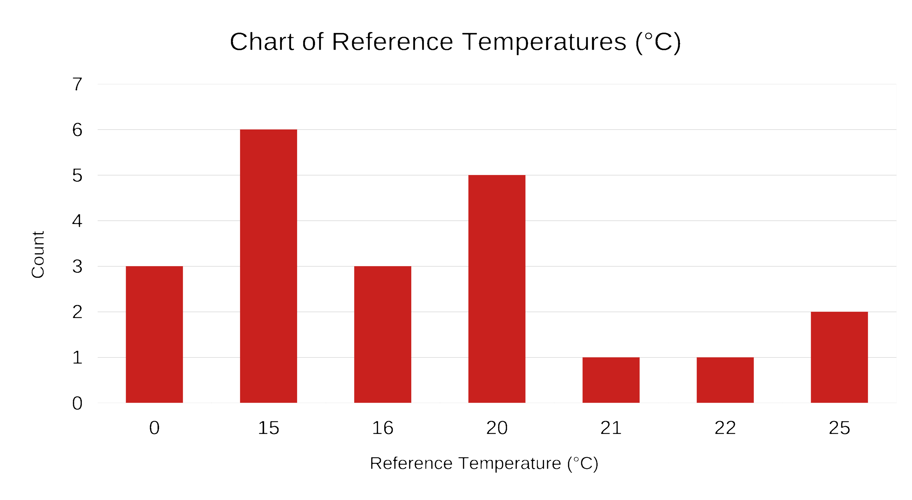
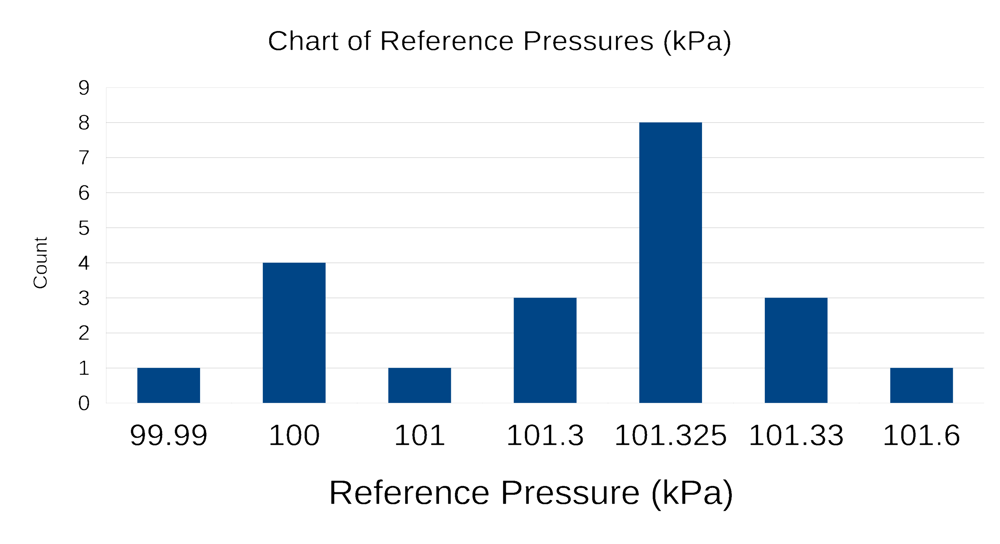

Ideal Gases EXPOSED:
Are They Even Real?!!
Just the Facts

The Ideal Gas
There are two parts to the definition of an ideal gas: First, the equation of state.
\[PV = nRT\]
Second, the enthalpy or internal energy is a function of temperature only. We’ll revisit this part when we get to the First Law.
In terms of molar volume the ideal gas equation of state is
\[P\hat{V} = R T\]
The current (2019) definition of R is \(8.314\ 462\ 618\ 153\ 24\ \mathrm{J/mol\ K}\). The value is exact.
The Ideal Gas (cont.)
The ideal gas equation of state is in error by no more than 1% if
\(\ \ \hat{V}_\mathrm{ideal} = \frac{RT}{P} > 5\ \mathrm{L/mol}\)
(\(5 \times 10^{−3}\ \mathrm{m^3/mol}\) or \(80\ \mathrm{ft^3}/\text{lb-mol}\)) (diatomic gases)
\(\ \ \hat{V}_\mathrm{ideal} = \frac{RT}{P} > 20\ \mathrm{L/mol}\)
(\(20 \times 10^{−3}\ \mathrm{m^3/mol}\) or \(320\ \mathrm{ft^3}/\text{lb-mol}\)) (other gases)
Mechanical Engineers often define the ideal gas equation of state as
\[P V = m R T\]
where \(m\) is the mass of gas. They are then required to have a different value of \(R\) for each gas, which is \(R/M\). For dry air, \(R = 287.058\ \mathrm{J/kg\ K}\).
Standard Conditions
The nice thing about standards is that you have so many to choose from.
(especially Grace Hopper and Andrew S. Tanenbaum)
Wikipedia lists 21 different combinations of temperature and pressure used as STP.
 
Standard Conditions (cont.)
The molar volume calculated at the standard temperature and pressure is the standard molar volume,
\[\hat{V}_\mathrm{S} = \frac{R T_\mathrm{S}}{P_\mathrm{S}}.\]
For the common case of \(T_\mathrm{S} = 0\ ^\circ \mathrm{C}\) and \(P_\mathrm{S} = 101.325\ \mathrm{kPa}\):
\[\hat{V}_\mathrm{S} = 22.414\ \mathrm{\frac{m^3(STP)}{kmol}} = 22.414\ \mathrm{\frac{L(STP)}{mol}} = 359.04\ \frac{\mathrm{m^3(STP)}}{\text{lb-mol}}\]
Standard Conditions (cont.)
For historical reasons, the molar flow of a gas is often measured in standard cubic meters (SCM) per time or standard cubic feet (SCF) per time.
For the common case of \(T_\mathrm{S} = 0\ ^\circ \mathrm{C}\) and \(P_\mathrm{S} = 101.325\ \mathrm{kPa}\):
\[\center{1\ \mathrm{SCM} = 44.615\ \mathrm{mol} = 0.04462\ \mathrm{kmol}}\]
\[\center{1\ \mathrm{SCF} = 2.785 \times 10^{−3}\ \text{lb-mol}}\]
You can always determine the true volumetric flow rate with either the ideal gas law or by using ratios of absolute temperatures and pressures.
Example
For a flow rate of \(3.95 \times 10^5\ \mathrm{SCFH}\) at \(285\ ^\circ \mathrm{F}\) and \(1.300\ \mathrm{atm}\),
- Calculate the molar flow rate in \(\mathrm{kmol/min}\) and \(\text{lb-mol/h}\).
- Calculate the true volumetric flow rate in \(\mathrm{m^3/s}\).
\[
\dot{n} = \frac{3.95 \times 10^5\ \mathrm{SCFH}}{\left(359.04\frac{\mathrm{ft^3(STP)}}{\text{lb-mol}}\right)} = 1100\ \frac{\text{lb-mol}}{\mathrm{h}} = 8.32\ \frac{\mathrm{kmol}}{\mathrm{min}}
\]
\[
\dot{V} = \frac{\dot{n}RT}{P} = \frac{8317 \boldsymbol{\cdot} 8.3145 \boldsymbol{\cdot} 413.71}{131722 \boldsymbol{\cdot} 60} = 3.62\ \frac{\mathrm{m^3}}{\mathrm{s}}
\]
or \[
\dot{V} = \dot{V}_\mathrm{S}\ \frac{T}{T_\mathrm{S}}\ \frac{P_\mathrm{S}}{P} = 3.95 \times 10^5 \boldsymbol{\cdot} \frac{744.67}{491.67} \boldsymbol{\cdot} \frac{1.00}{1.30} = 460 \times 10^5\ \mathrm{\frac{ft^3}{h}} = 3.62\ \frac{\mathrm{m^3}}{\mathrm{s}}
\]
Dalton’s and Amagat’s Laws
For an ideal gas mixture, the partial pressure of pure component \(\mathrm{A}\) is defined as
\[
p_\mathrm{A} = \frac{n_\mathrm{A} RT}{V} = \frac{n_\mathrm{A} RT}{V} \boldsymbol{\cdot} \frac{PV}{nRT} = \left(\frac{n_\mathrm{A}}{n}\right)P =y_\mathrm{A}P
\]
For an ideal gas mixture, the pure-component volume of pure component \(\mathrm{A}\) is defined as
\[
v_\mathrm{A} = \frac{n_\mathrm{A} RT}{P} = \frac{n_\mathrm{A} RT}{P} \boldsymbol{\cdot} \frac{PV}{nRT} = \left(\frac{n_\mathrm{A}}{n}\right)V =y_\mathrm{A}V
\]
Summing over all of the species, \(\sum p_i = P\), \(\sum v_i = V\)
which are known as Dalton’s law and Amagat’s law respectively.
Some Handy Relationships
Molar concentration of an ideal gas
\[C_\mathrm{A} = \frac{n_\mathrm{A}}{V} = \frac{p_\mathrm{A}}{RT}\]
Molar density of an ideal gas
\[\rho = \frac{n}{V} = \frac{P}{RT}\]
Mass density of an ideal gas
\[\rho = \frac{nM}{V} = \frac{PM}{RT}\]
The Takeaways
- There are two parts to the ideal gas law: The equation of state, \(PV = nRT\), and the internal energy is only a function of temperature..
- The ideal gas law is in error by no more than 1% if the ideal molar volume is greater than 5 L/mol for diatomic gases or greater than 20 L/mol for other gases.
- We are using an STP of \(0\ ^\circ\mathrm{C}\) and \(101.325\ \mathrm{kPa}\).
- Molar flow rates are often given in SCM or SCF per time.
- The partial pressure of a species in an ideal gas is the mole fraction times the total pressure.
- The pure-component volume of a species in an ideal gas is the mole fraction times the total volume.
Thanks for watching!
The Full Story companion video is in the link in the upper left. The next video in the series, is in the upper right. To learn more about Chemical and Thermal Processes, visit the website linked in the description.